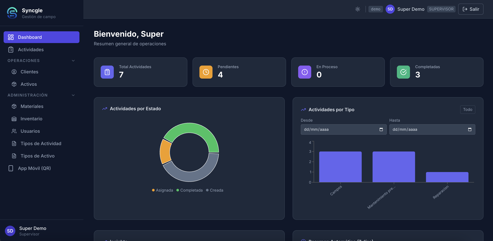
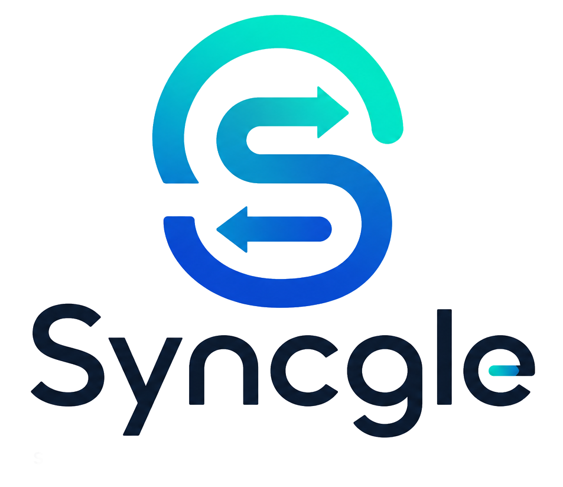
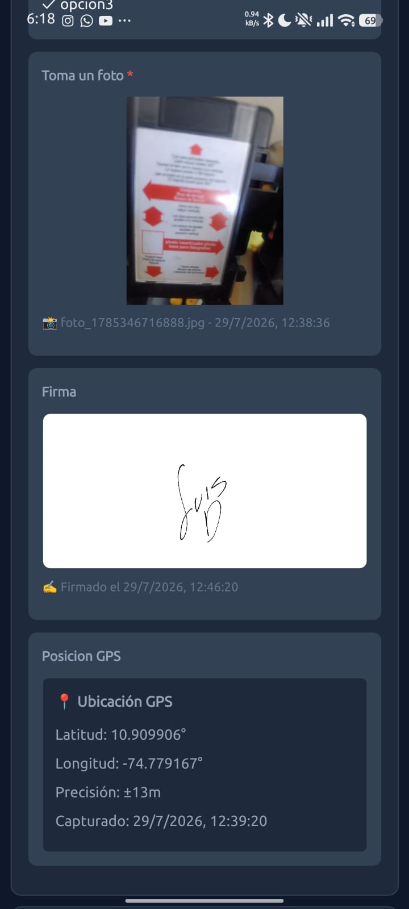

QA Automation Engineer · Constructor de productos
QA Automation Engineer · Product Builder
Ingeniero de automatización de pruebas con más de 8 años de experiencia en desarrollo y QA. Automatizo software con Selenium, WebdriverIO y Appium, y diseño flujos de pruebas asistidos por IA. Fuera del trabajo, construyo productos propios de principio a fin: SARA y Syncgle.
Automation Test Engineer with 8+ years of experience in software development and QA. I automate software with Selenium, WebdriverIO and Appium, and design AI-assisted testing workflows. Outside of work, I build my own products end to end: SARA and Syncgle.
Sobre mí
About
Soy QA Automation Engineer en Qrvey desde 2020, donde automatizo pruebas con Selenium, WebdriverIO y Appium, ejecuto pruebas de rendimiento con Sitespeed.io y Artillery.io, e integro los resultados de las ejecuciones con Slack vía CI/CD. También contribuyo a un framework interno de QA asistido por IA (Node.js + Playwright + Playwright MCP), donde un agente explora la aplicación a partir de especificaciones y genera pruebas de regresión reproducibles, con seguimiento de cobertura sobre cerca de 1.000 casos planificados.
I've been a QA Automation Engineer at Qrvey since 2020, automating tests with Selenium, WebdriverIO and Appium, running performance tests with Sitespeed.io and Artillery.io, and integrating test results with Slack via CI/CD. I also contribute to an in-house AI-assisted QA framework (Node.js + Playwright + Playwright MCP), where an agent explores the app from feature specs and generates reproducible regression tests, tracking coverage across close to 1,000 planned test cases.
Antes de eso pasé varios años en Ludycom S.A., empezando en soporte de infraestructura y sistemas GIS, pasando por análisis y ejecución de pruebas, hasta desarrollo de aplicaciones Android nativas. Ese recorrido —de campo a desarrollo a QA— es la misma mezcla que uso hoy para construir mis propios productos: SARA (gestión académica) y Syncgle (gestión de trabajo en campo).
Before that I spent several years at Ludycom S.A., starting in infrastructure and GIS support, moving through test analysis and execution, up to native Android development. That path —from the field to development to QA— is the same mix I use today to build my own products: SARA (academic management) and Syncgle (field work management).
Experiencia
Experience
Más de una década moviéndome entre soporte técnico, desarrollo y aseguramiento de calidad.
Over a decade moving between technical support, development and quality assurance.
Proyectos propios
Personal projects
De la experiencia de campo (GIS, soporte técnico) y del oficio de QA nacieron estos dos productos: uno para instituciones educativas, otro para equipos de trabajo en terreno. Ambos están desplegados y en uso.
From field experience (GIS, technical support) and the craft of QA came these two products: one for educational institutions, one for field work teams. Both are deployed and in use.
SARA (Sistema Académico de Rendimiento y Aprendizaje) centraliza calificaciones, asistencia y boletines para colegios y docentes independientes. Nació entre 2017 y 2018 como proyecto de grado —entonces llamado SGA— mientras estudiaba Análisis y Desarrollo de Sistemas de Información (ADSI) en el SENA, y en 2025–2026 pasó por una reescritura completa: nueva arquitectura, modelo multi-tenant y una versión simplificada para docentes que trabajan solos.
SARA (Academic Performance and Learning System) centralizes grades, attendance and report cards for schools and independent teachers. It started between 2017 and 2018 as a capstone project —then called SGA— while I was studying Information Systems Analysis and Development (ADSI) at SENA, and went through a full rewrite in 2025–2026: new architecture, multi-tenant model, and a simplified version for teachers working solo.


Syncgle Gestión de campo Field work managementSyncgle (antes Field Work) es una plataforma SaaS multi-tenant para gestionar actividades de técnicos en campo: instalaciones, mantenimientos y reparaciones. Conecta un panel web para administradores y supervisores con una app móvil para técnicos que sigue funcionando sin conexión, sincronizando automáticamente al recuperar la señal.
Syncgle (formerly Field Work) is a multi-tenant SaaS platform for managing field technicians' activities: installations, maintenance and repairs. It connects a web panel for admins and supervisors with a mobile app for technicians that keeps working offline, syncing automatically once connection is back.

Habilidades técnicas
Technical skills
Pensamiento analítico aplicado a pruebas y validación de datos, enfoque en calidad y automatización, adaptabilidad a múltiples tecnologías y trabajo ágil (Scrum).
Analytical thinking applied to testing and data validation, focus on quality and automation, adaptability across technologies, and agile (Scrum) teamwork.
Educación
Education
Contacto
Contact
Abierto a nuevas oportunidades en QA, automatización y desarrollo de producto. Escríbeme por correo o LinkedIn.
Open to new opportunities in QA, automation and product development. Reach out by email or LinkedIn.